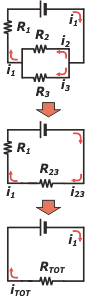

NO ME SALEN
(APUNTES TEORICOS Y EJERCICIOS DE BIOFÍSICA DEL CBC)
ELECTRICIDAD
|
|

|
| |
 |
EM 30) El voltímetro y el amperímetro del circuito de la figura se
consideran ideales, los tres resistores son de 10 ohms cada
uno, y la pila de 1,5 V. ¿Cuánto valen las indicaciones de los
instrumentos, respectivamente?
a) 0,5 V y 50 mA b) 5 V y 5 mA
c) 5 V y 5 A d) 0,5 V y 500 mA
e) 10 V y 100 mA f) 1 V y
100 mA
|
 |
|
| |
Como con todos los ejercicios de circuitos, conviene ponerle nombre a cada elemento del mismo... que, a su vez, le dará nombre a cada característica eléctrica: corriente, diferencia de potencial... lo que sea. |
|
|
 |
Este de arriba es el circuito original... sólo que le saqué el amperímetro y el voltímetro, que, como son ideales, no afectan al circuito: que estén o que no estén es lo mismo, ni las corrientes ni los potenciales cambian. (Si no entendés este párrafo, hay una aclaración más abajo de todo).
Llamé R1 a la resistencia del costado. La corriente que la atraviesa, lógicamente se llamará i1, y la diferencia de potencial a la que está sometida, V1... que no es igual a la de la pila.
La del medio se llama R2, su corriente i2 y su diferencia de potencial V2.
A la de abajo le puse R3, su corriente i3 (que es la que mide nuestro amperímetro) y su diferencia de potencial, V2 (que es la que mide el voltímetro).
Fijate que i1 es la corriente que entra y sale de los bornes de la pila... de modo que i1 es la corriente total del circuito... por eso la dibujé dos veces.
En el circuito intermedio, equivalente al primero, reemplacé las resistencias R2 y R3, por su equivalente, R23, y la corriente que la atraviesa se llamará i23 , y es fácil darse cuenta que esa corriente no es otra que la total (o la 1).
Por último, este circuito de acá abajo, que es equivalente al anterior... y por lo tanto equivalente al original, posee una sola resistencia, que llamé resistencia total, RTOT, y es la equivalente a la serie formada por R1 y R23.
|
|
|
| el sentido de la corriente es arbitrario, podés asignarle cualquiera de los dos sentidos, no cambia nada. |
|
Reemplaqzar circuitos complicados por otros circuitos menos complicados pero equivalentes es un ejercicio que tenés que aprender a hacer con fluidez. Siempre de a pequeños pasos, y siempre desembocando en el circuito más sencillo que pueda existir: una sola resistencia, una sóla pila, una sola corriente.
En el circuito intermedio se ve que R23 es el quivalente de un paralelo formado por dos resistencias iguales de 10 Ω cada una, que entonces vale 5 Ω. Y en el último, se ve que RTOT es el quivalente de una serie formada por dos resistencias, una de 10 Ω y la otra de 5 Ω, que valdrá entonces 15 Ω, ni más ni menos.
La corriente total, iTOT, que es igual a i1, y también igual a i23 (como ves en el circuito intermedio), valdrá:
iTOT = ΔVTOT / RTOT = 1,5 V / 15 Ω
iTOT = 0,1 A
Fijate que solo utilizo la Ley de Ohm para elementos simples, siempre una sola diferencia de potencial (en este caso: la pila), una sola resistencia y una sola corriente. Por lo que habíamos visto antes...
iTOT = i1 = i23 = 0,1 A
Del mismo modo aplico la Ley para cada elemento individual:
ΔV1 = i1 . R1 = 0,1 A . 10 Ω
ΔV1 = 1,0 V
Y también:
ΔV23 = i23 . R23 = 0,1 A . 5 Ω
ΔV23 = 0,5 V
Podés chequear que la suma de las caídas de potencial a lo largo de un circuito en serie es igual a la "subida" de potencial que produce la pila. Efectivamente (se ve perfecto en el circuito intermedio)...
ΔV1 + ΔV23 = ΔVTOT
1,0 V + 0,5 V = 1,5 V
La diferencia de potencial ΔV23 es igual a la diferencia de potencial que "leen" las dos resistencias del paralelo, R2 y R3.
ΔV23 = ΔV2 = ΔV3
Por lo tanto:
i2= ΔV2 / R2 = 0,5 V / 10 Ω = 0,05 A
i3= ΔV3 / R3 = 0,5 V / 10 Ω = 0,05 A
También podés chequear que la suma de las corrientes de los elementos de un paralelo es igual a la corriente total de la que se dividió:
i2 + i3 = i23 = i1 = iTOT
0,05 A + 0,05 A = 0,1 A
Si no me equivoco, ya dimos todas las respuestas que nos pedían: |
|

|
|
|
|
Reforcemos algunos conceptos. Un amperímetro ideal tiene una resistencia interna nula... por lo tanto colocada en serie con una resistencia cualquiera no altera el valor de la resistencia. Y un voltímetro ideal posee una resistencia infinita... por lo que colocada en paralelo con una resistencia cualquiera, el paralelo tiene el mismo valor de resistencia que el de la resistencia cualquiera. Leé de nuevo -pero más lentamente- este párrafo, y mirá atentamente el circuito original. ¿Están bien colocados los instrumentos de medición? ¿Fue correcto haberlos ignorado antes de hacer los cálculos? |
|
|
| |
|
 |
| Desafío: ¿Cuánto vale la potencia disipada en cada uno de llas resistencias? |
|
| |
|
| Algunos derechos reservados.
Se permite su reproducción citando la fuente. Última actualización dic-08. Buenos Aires, Argentina. |
|
|
 | |
|
|